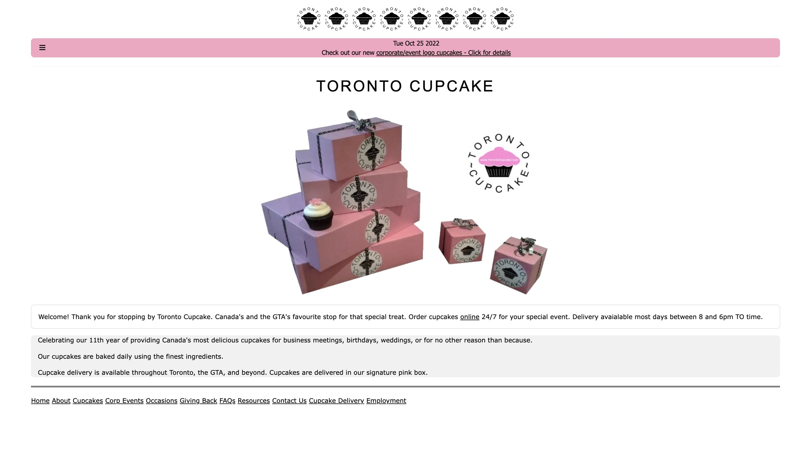

In this project, I redesigned the Toronto Cupcake website. I identified user problems relating to usability, learnability, memorability, and accessibility. I then redesigned the homepage of the website to resolve these issues.
I choose the Toronto Cupcake website because the website is very simplistic, and I wanted to improve its visual appeal. I disliked the color scheme and the amount of white space on the website. I also felt like the website wasn’t as user-friendly due to the small font size and placement of the menu bar.
